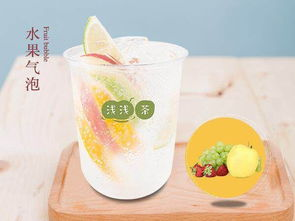

水果气泡
- 水果洗净、削皮。
- 水果切块。将所有水果放入杯子里，如果觉得切得有点多，可以边做边吃。
- 缓缓加入气泡水，慢慢的水果块就都会浮上来。
- 静置片刻，等水果和气泡水的味道融合了之后就可以开始喝了。
满杯百香果
- 用镊子夹两半青桔在700CC水果杯里，用吧更戳三下；
- 在塑料杯加两片青柠檬（不用戳）；拿取雪克杯倒取绿茶：正常冰、少冰、去冰225茶线；
- 加糖：正常糖4-2(105)、少糖4-3 (95)、半糖3-3(85）,微糖2-3(80)；
- 加45ml冷冻百香果汁顺时针搅拌3圈；
- 加入冰块至700茶线；
- 将加好冰的百香果汁打杯5秒；
金桔柠檬茶
- 先把薄荷用开水冲洗一遍，放入大杯子，倒入开水，冲泡十分钟，备用
- 把柠檬，金桔切片，备用。等薄荷水稍微冷后，倒入三勺蜂蜜，搅拌均匀
- 提前两个小时把冰块冻好
- 把柠檬，金桔放入调好的薄荷水里，再把冰块放入，放入新鲜薄荷即可。
蜂蜜柚子茶
- 首先用盐把柚子皮洗净，将柚子放在水中浸泡10分钟，可以用牙刷细致刷一刷，这样处理比较干净，并擦干。
- 用刀将柚子最外面黄绿色的皮削下来，削的时候一定要薄，尽量只削下黄色部分，白色部分会很苦，可根据自己口味取舍。
- 将柚子皮切成丝，再用少量食盐腌制，使柚子皮中的苦味析出，用清水浸泡半小时，泡完的水会呈现明显的黄绿色。可以根据口味尝一下苦味的程度。
- 利用浸泡柚子皮的时间，我们就把白色的薄皮全部去掉，把柚子肉全部剥出来，柚子肉剥得越细越好。用手掰碎，蛮好掰，这样煮起来会比较快。
- 将切好的柚子皮和果肉放入干净无油的锅中（要保证不粘锅），加一碗清水和适量的冰糖。用中火煮到改开锅小火熬（1个小时左右，时间自己看），熬至黏稠，柚皮金黄透亮即可，
注意熬的时候要经常搅拌，以免粘锅。用勺子只能捞起少量汁的时候停火。
- 等粘稠的柚子汁冷却至50~60℃时，加入蜂蜜，搅拌均匀后就做成蜂蜜柚子茶了，装入密封容器，放入冰箱冷藏，一周作用就可以食用了。
- 取出一份布丁，大略弄散，把奶茶倒入，搅拌均匀。